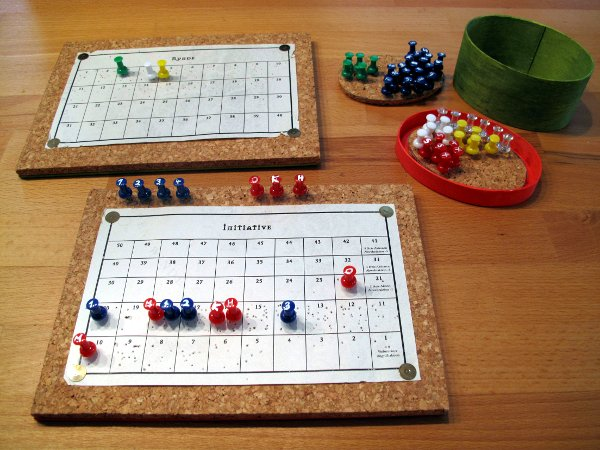

Übersicht
In DSA ist es nicht immer leicht die Übersicht während der Kämpfe zu behalten. Das Initiativeblatt und der Rundenzähler sollen hierbei helfen.
Rundenzähler
Auf dem Rundenzähler wird die aktuelle Kampfrunde und Aktion markiert. Jeder Spieler markiert besondere Momente während den Kampfrunden. So markiert z.B. der Magier den Beginn und die Dauer eines Zaubers. So kann die gesame Spielrunde leicht erkennen, wann welche Aktionen wirksam werden.
Initiativeblatt
Auf dem Initiativeblatt markiert jeder Spieler die Initiative seines Helden. Der Spielleiter kann weitere Markierungen für NSCs anbringen. Wenn Aktionen umgewandelt werden, dann können diese ebenfalls markiert werden.
Praktische Hinweise
Für eine einfache Verwendung am Spieltisch kann ein praktisches Steckbrett gebaut werden.

Benötigte Materialien
- Korkplatte
- Sperrholzplatte 2xA5 Format oder 1xA4
- Pinnadeln für die Pinwand
- Holzleim
- Teppichmesser
- wasserfester Stift
- evtl etwas Farbe und Holzschutz wie z.B. Leinöl zum Verzieren und Schutz vor Verschmutzung
- evtl Schleifpapier zum Glätten der Holzoberflächen
Arbeitsschritte
- Die Korkplatte mit dem Holzleim auf die Sperrholzplatten kleben.
- Die Pinnadeln mit dem wasserfesten Stift beschriften. Als Beschriftung reicht es oft die Initialen des Charakters zu verwenden. NSC Pins können durchnummeriert werden. Die Pins gibt es in verschiedenen Farben. So ist es z.B. möglich NSC und Spielercharakter in unterschiedlichen Farben darzustellen.
- Evtl mit etwas Farbe und Leinöl das Sperrholz vor Verschmutzung schützen.
Seiten
-

Initiative und Runden